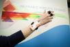

Anxiety
Anxiety Detection Methods
Overview: commonly used methods
- sensors
- skin (Electrodermal Activity(EDA), Galvanic Skin Response(GSR))
- heart rate (ECG, PPG)
- brainwave (EEG)
- breathing (RSP)
- Motion capture (to detect user trembling, shrugging, etc.)
- IMU
- Camera (facial features)
Comparison
| Category | Method | Target | Pros | Cons | Note |
|---|---|---|---|---|---|
| Sensors | EDA, GSR | skin responses | the most commonly used, high accruacy, many existing frameworks | can also be triggered by other factors like excitement | GSR anxiety detection system, Al-Nafjan & Aldayel 2024 |
| ECG, PPG | heart rate, heart rate variability(HRV) | chest or wrist strap, comfortable for user to wear | ECG+PPG+EDA, Sahu et al. 2025 | ||
| EEG | brainwave | data noise relatively large | EEG+ECG to detect fear, Vachiratamporn et al. 2013; EEG anxiety classification, Shikha et al. 2021 | ||
| Respiration Sensor (RSP) | breathing | often be seen as a biofeedback mechanism in games for stress therapy; an indicator that the player can control | EDA+ECG+RSP, Ferreira et al. 2023 | ||
| Motion | IMU | user trembling, shrugging, etc. | not a direct method for anxiety detection but can serve as a good supplementary source of information | ||
| Camera | remote PPG | heart rate and HRV features obtained from face | non invasive at all, low cost | require good lighting, user might feel self-conscious being recorded | rPPG, Khomidov et al. 2024 |
| eye movement | blink, eye gaze | eye gaze pattern, Harshit et al. 2024; Eye blink + heart rate, Miranda et al. 2014 |
Equipment
anxiety detection
Heart rate only
- Polar H10
- chest strap
- clinical accuracy, ECG, good HRV monitor during both high-intensity exercise as well as during rest
- £ 80
- Polar OH1 / Polar Verity sense
- wrist strap, PPG, good HRV monitor during rest (sitting)
- £ 50-70
Multimodal
- Shimmer3 GSR+ Unit
- multimodal, EDA+PPG+IMU, support HRV, good during rest (sitting)

- ~£600
- multimodal, EDA+PPG+IMU, support HRV, good during rest (sitting)
eyetracking
vr headset with built in eye-tracker
- HTC Vive Focus Vision
- £919
- Meta Quest Pro
- ~£700
- Pimax Crystal
- ~£700
- HTC Vive Pro Eye
- eBay ~£900
- Varjo Aero HMD
- ~£1100
- Pimax Dream Air
- £1500
vr headset + eye tracking glasses
A study validating gaze tracking performances of VR headset with build-in eye-tracker(they use HTC Vive Pro Eye) against Tobii glasses(they use Tobii Pro Glasses 3) in 2D and 3D tasks. Tobii provides excellent precision in the 2D task(with a fixed viewing distance and a stable and perfectly aligned 2D reference plane). However, in the 3D task, the VR headset significantly outperformed the glasses. Tobii can only derive a 3D gaze point through indirect estimation via computer vision and 3D scene reconstruction, requiring supplementary technologies like SLAM or depth-sensing cameras (e.g., Intel RealSense). Todd et al. 2026
- tobii pro glasses 3, don't know how much, has to request a quote